Introduction#
It's time for us to put our cluster to work and deploy a workload. We're going to build an example Java application, microsweeper, using Quarkus (a Kubernetes Native Java stack) and Azure Database for PostgreSQL. We'll then deploy the application to our Azure Red Hat OpenShift cluster, connect to the database using Azure Private Link, and automate the deployment with OpenShift Pipelines.
Create Azure Database for PostgreSQL instance#
-
First, let's create a namespace (also known as a project in OpenShift). To do so, run the following command:
-
Create the Azure Postgres Server resource. To do so, run the following command (this command will take ~ 5mins)
For the sake of the workshop we are creating a public database that any host in Azure can connect to. In a real world scenario you would create a private database and connect to it over a private link service
-
Check connectivity from to the database. To do so, run the following command:
Your output should look similar to:
Build and deploy the Microsweeper app#
Now that we've got a PostgreSQL instance up and running, let's build and deploy our application.
-
First, let's clone the application from GitHub to our local Cloud Shell. To do so, run the following command:
-
Next, let's change directory into the newly cloned Git repository. To do so, run the following command:
-
Next, we will add the OpenShift extension to the Quarkus CLI. To do so, run the following command
-
We also want Quarkus to be able to use OpenShift ConfigMaps and Secrets
-
Create a OpenShift secret containing Database credentials for Quarkus to use
cat << EOF | oc apply -f - apiVersion: v1 kind: Secret metadata: name: microsweeper-secret namespace: microsweeper-ex type: Opaque stringData: PG_URL: jdbc:postgresql://microsweeper-${UNIQUE}.postgres.database.azure.com:5432/postgres PG_USER: myAdmin@microsweeper-${UNIQUE}.postgres.database.azure.com PG_PASS: ${AZ_USER}-${UNIQUE} EOF -
Now, we'll configure Quarkus to use the PostgreSQL database that we created earlier in this section. To do so, we'll create an
application.propertiesfile using by running the following command:cat <<"EOF" > ./src/main/resources/application.properties # Database configurations %prod.quarkus.datasource.db-kind=postgresql %prod.quarkus.datasource.jdbc.url=${PG_URL} %prod.quarkus.datasource.username=${PG_USER} %prod.quarkus.datasource.password=${PG_PASS} %prod.quarkus.datasource.jdbc.driver=org.postgresql.Driver %prod.quarkus.hibernate-orm.database.generation=drop-and-create %prod.quarkus.hibernate-orm.database.generation=update # OpenShift configurations %prod.quarkus.kubernetes-client.trust-certs=true %prod.quarkus.kubernetes.deploy=true %prod.quarkus.kubernetes.deployment-target=openshift %prod.quarkus.openshift.build-strategy=docker %prod.quarkus.openshift.expose=true %prod.quarkus.openshift.deployment-kind=Deployment %prod.quarkus.container-image.group=microsweeper-ex %prod.quarkus.openshift.env.secrets=microsweeper-secret EOF -
Now that we've provided the proper configuration, we will build our application. We'll do this using source-to-image, a tool built-in to OpenShift. To start the build and deploy, run the following command:
Quarkus will build the .jar locally and then work with the OpenShift build system to inject it into a Red Hat UBI image, save that to the inbuild OpenShift registry, and then run the resultant image in OpenShift.
-
We want to see custom metrics from the Quarkus app (they're exposed by the Quarkus micrometer plugin) so we can configure a Prometheus
ServiceMonitorresource to watch for the applications label.cat << EOF | oc apply -f - apiVersion: monitoring.coreos.com/v1 kind: ServiceMonitor metadata: labels: k8s-app: microsweeper-monitor name: microsweeper-monitor namespace: microsweeper-ex spec: endpoints: - interval: 30s targetPort: 8080 path: /q/metrics scheme: http selector: matchLabels: app.kubernetes.io/name: microsweeper-appservice EOF -
Change back to your previous working directory
Review#
Let's take a look at what this command did, along with everything that was created in your cluster. Return to your tab with the OpenShift Web Console. If you need to reauthenticate, follow the steps in the Access Your Cluster section.
Container Images#
From the Administrator perspective, expand Builds and then ImageStreams, and select the microsweeper-ex project.
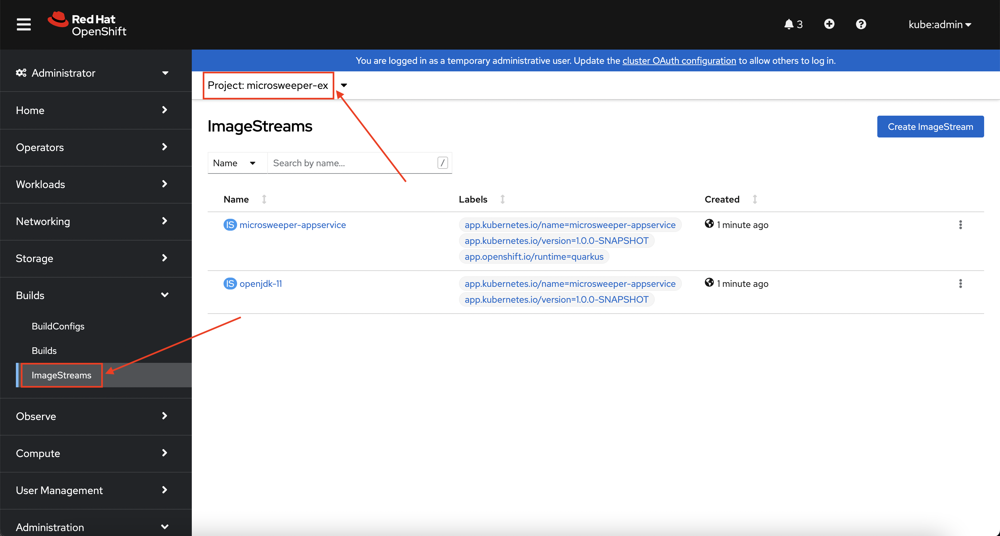.
You will see two images that were created on your behalf when you ran the quarkus build command. There is one image for openjdk-11 that comes with OpenShift as a Universal Base Image (UBI) that the application will run under. With UBI, you get highly optimized and secure container images that you can build your applications with. For more information on UBI please read this article.
The second image you see is the the microsweeper-appservice image. This is the image for the application that was built automatically for you and pushed to the built-in container registry inside of OpenShift.
Image Build#
How did those images get built you ask? Back on the OpenShift Web Console, click on BuildConfigs and then the microsweeper-appservice entry.
 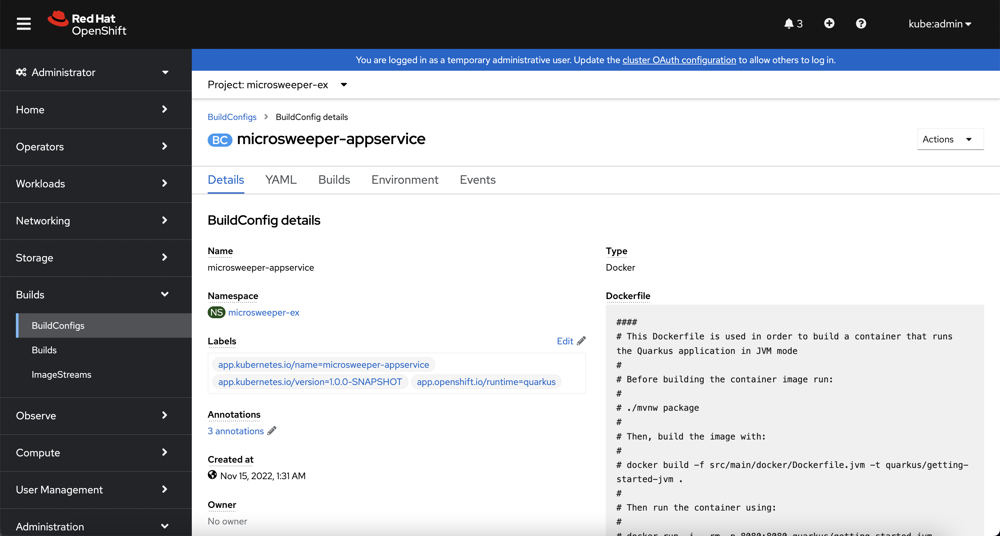
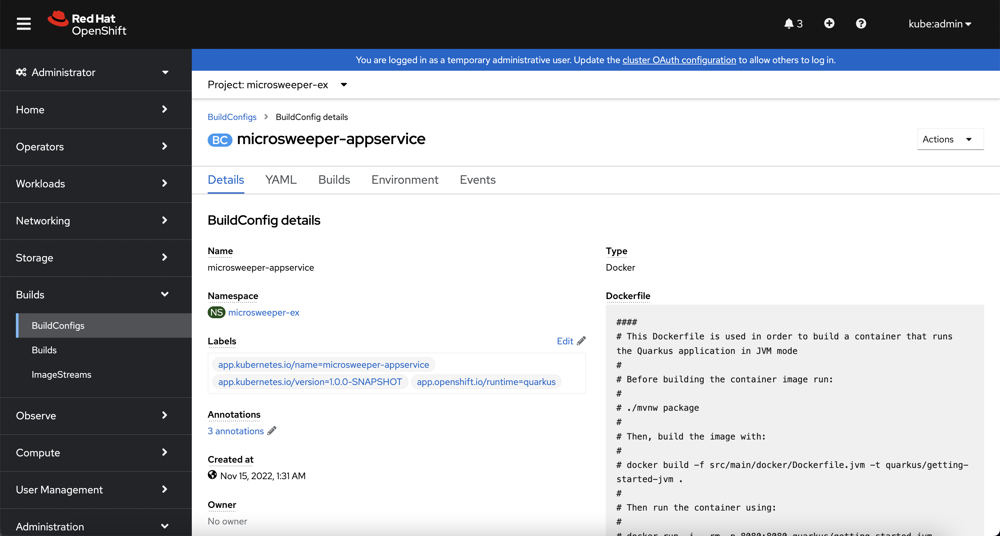
When you ran the quarkus build command, this created the BuildConfig you can see here. In our quarkus settings, we set the deployment strategy to build the image using Docker. The Dockerfile file from the git repo that we cloned was used for this BuildConfig.
A build configuration describes a single build definition and a set of triggers for when a new build is created. Build configurations are defined by a BuildConfig, which is a REST object that can be used in a POST to the API server to create a new instance.
You can read more about BuildConfigs here
Once the BuildConfig was created, the source-to-image process kicked off a Build of that BuildConfig. The build is what actually does the work in building and deploying the image. We started with defining what to be built with the BuildConfig and then actually did the work with the Build. You can read more about Builds here
To look at what the build actually did, click on Builds tab and then into the first Build in the list.
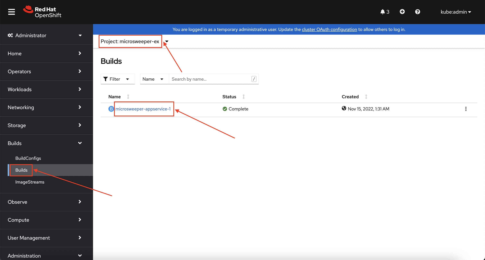
On the next screen, explore around. Look specifically at the YAML definition of the build and the logs to see what the build actually did. If you build failed for some reason, the logs are a great first place to start to look at to debug what happened. 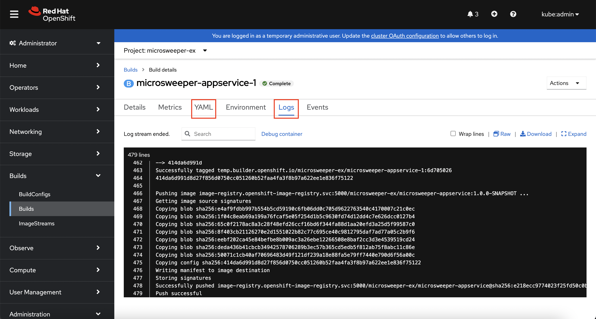
Image Deployment#
After the image was built, the source-to-image process then deployed the application for us. In the quarkus properties file, we specified that a deployment should be created. You can view the deployment under Workloads -> Deployments, and then click on the Deployment name. 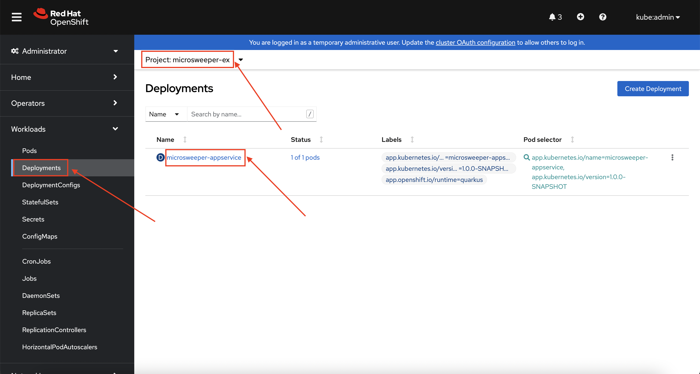
Explore around the deployment screen, check out the different tabs, look at the YAML that was created. 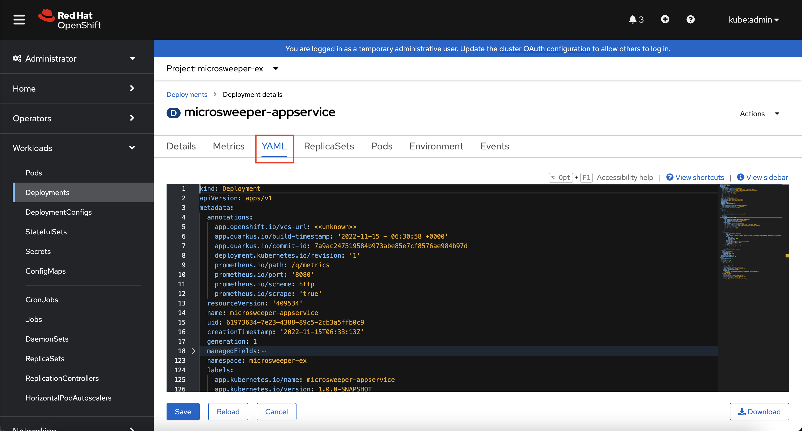
Look at the pod the deployment created, and see that it is running. 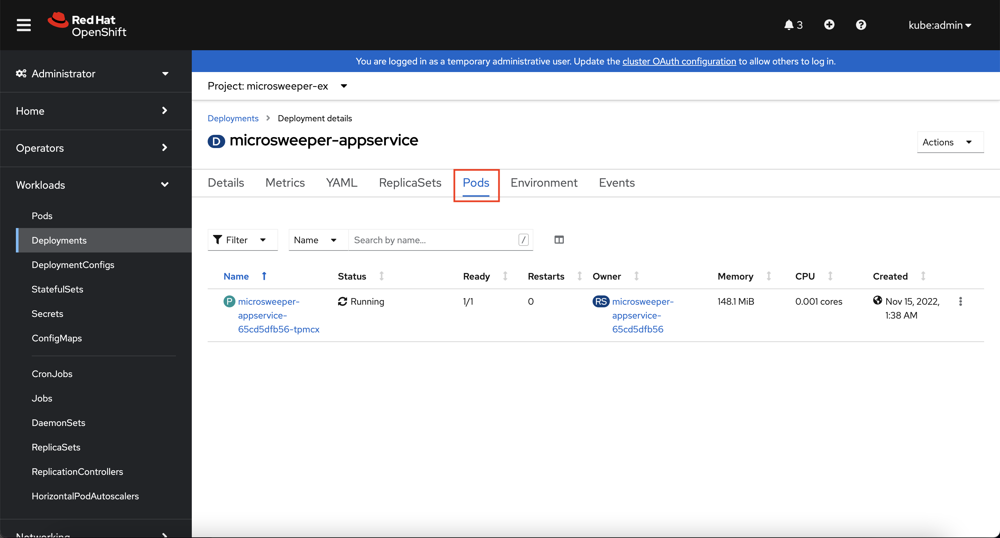
The last thing we will look at is the route that was created for our application. In the quarkus properties file, we specified that the application should be exposed to the Internet. When you create a Route, you have the option to specify a hostname. To start with, we will just use the default domain that comes with ARO (useast.aroapp.io in our case). In next section, we will expose the same application to a custom domain leveraging Azure Front Door.
You can read more about routes in the Red Hat documentation
From the OpenShift Web Console menu, click on Networking->Routes, and the microsweeper-appservice route. 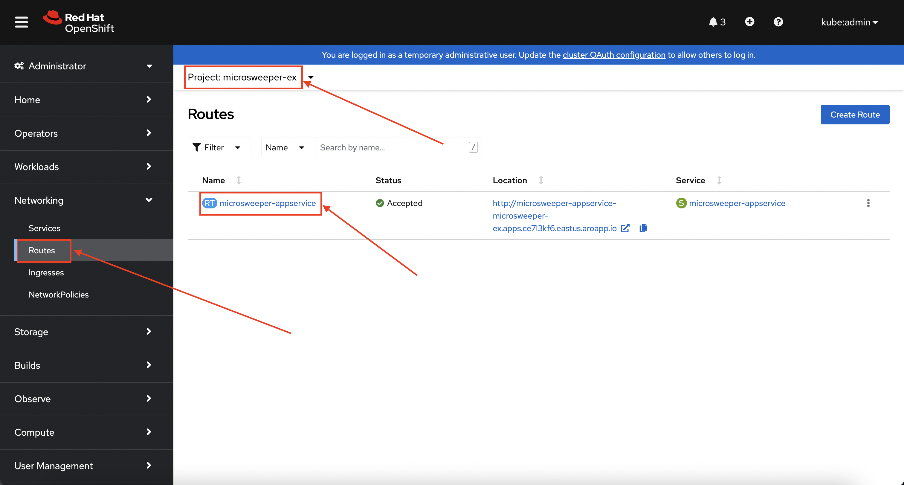
Test the application#
While in the route section of the OpenShift Web Console, click the URL under Location: 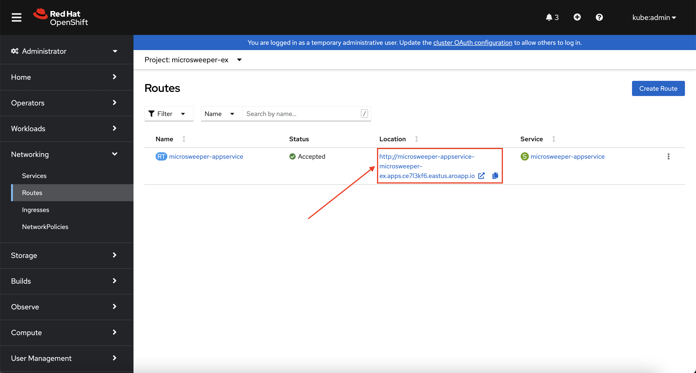
You can also get the the URL for your application using the command line:
View custom metrics for the App#
Switch the OpenShift Web Console to the Developer view, select the project microsweeper-ex and go to Observe > Metrics and type process_uptime_seconds into custom metrics. Switch the timeframe to 5min.
While you're here, you might also want to look at the Dashboard tab to see the Project's CPU/Memory usage.
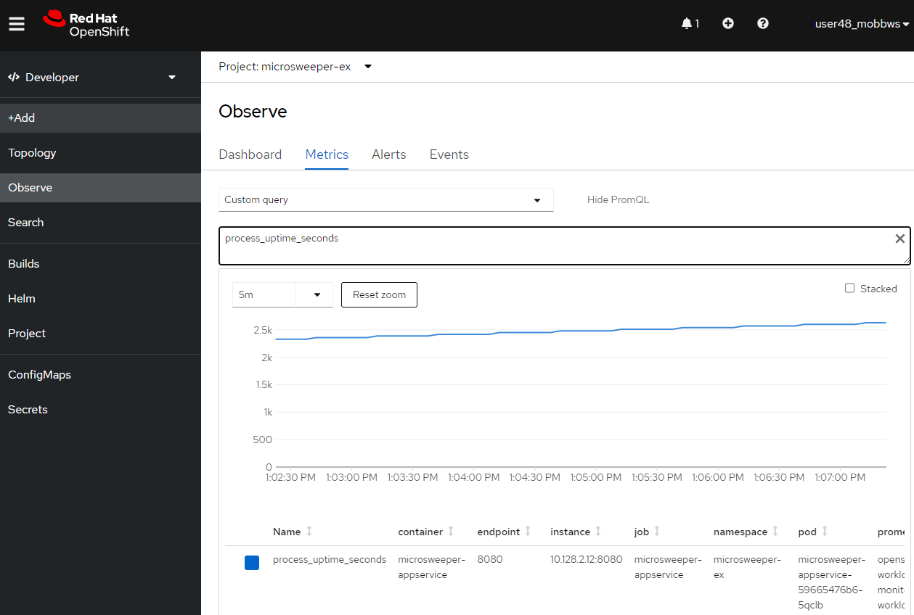
Application IP#
Let's take a quick look at what IP the application resolves to. Back in your Cloud Shell environment, run the following command:
The output of the command will look similar to this:
Server: 168.63.129.16
Address: 168.63.129.16#53
Non-authoritative answer:
Name: microsweeper-appservice-microsweeper-ex.apps.ce7l3kf6.eastus.aroapp.io
Address: 40.117.143.193
Notice the IP address; can you guess where it comes from?
It comes from the ARO Load Balancer. In this workshop, we are using a public cluster which means the load balancer is exposed to the Internet. If this was a private cluster, you would have to have connectivity to the vNet ARO is running on. This could be via a VPN connection, Azure ExpressRoute, or something else.
To view the ARO load balancer, on the Azure Portal, search for "Load Balancers" in the search bar and click on the Load balancers service. 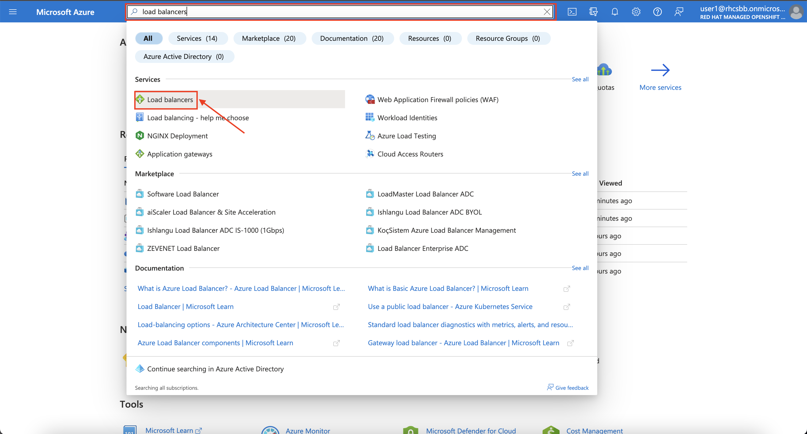
You will notice two load balancers, one that has -internal in the name and one that does not. The -internal load balancer is used for the OpenShift API. The other load balancer (without the -internal suffix) in the name is use the public load balancer used for the default Ingress Controller. Click into the load balancer for applications.
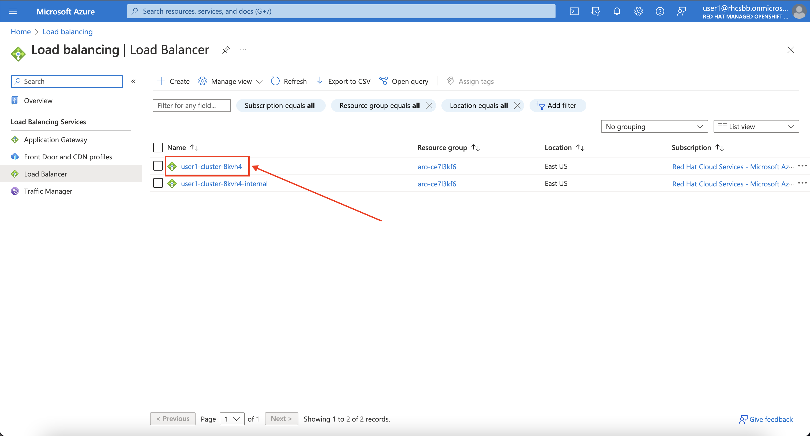
On the next screen, click on Frontend IP configuration. Notice the IP address of the 2nd load balancer on the list. This IP address matches what you found with the nslookup command. 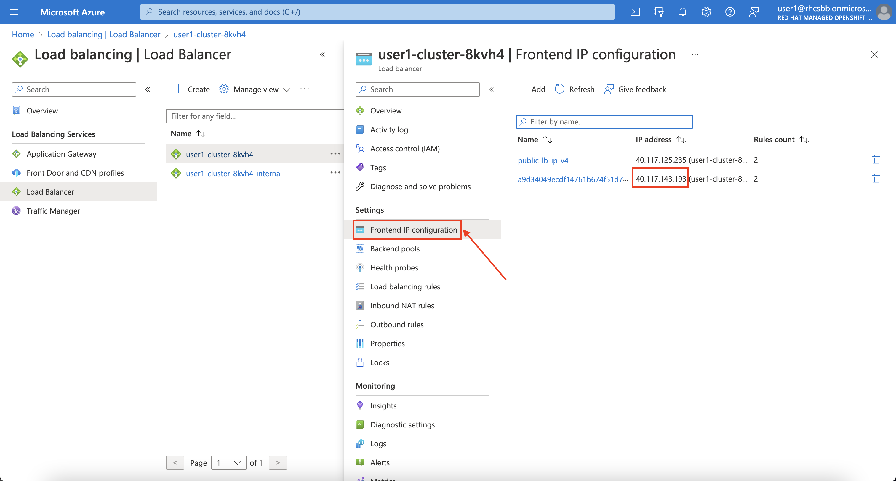
For the fun of it, we can also look at what backends this load balancer is connected to. 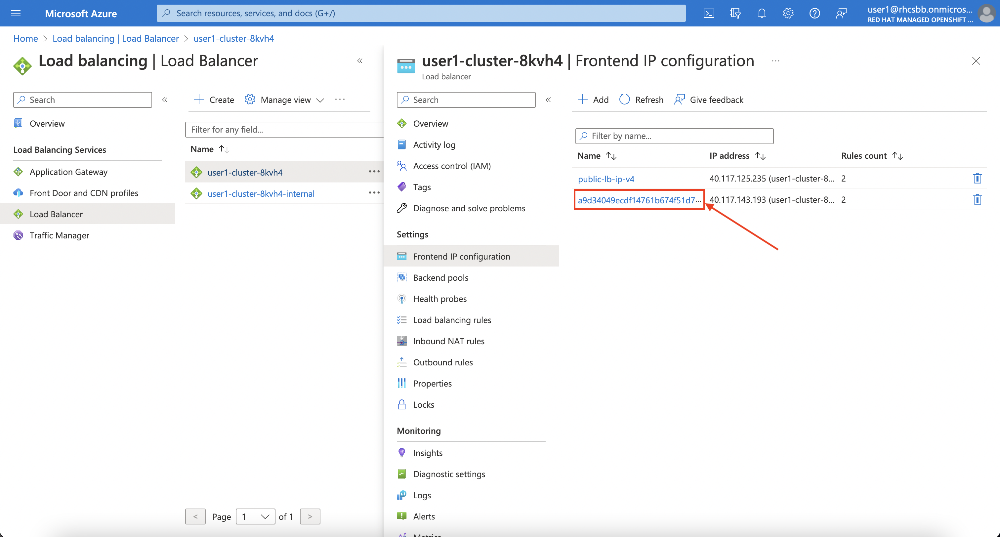
Next, click on the pool that ends in 443. 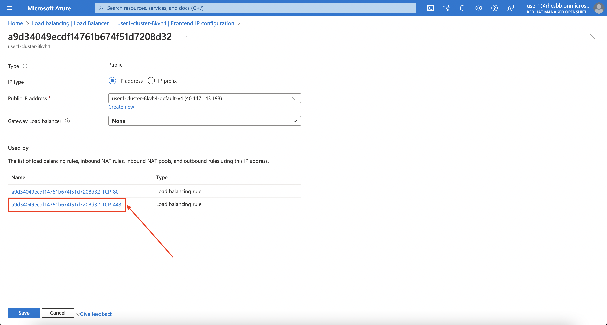
Notice the Backend pool. This is the subnet that contains all the worker nodes. And the best part is all of this came with Azure Red Hat OpenShift out of the box! 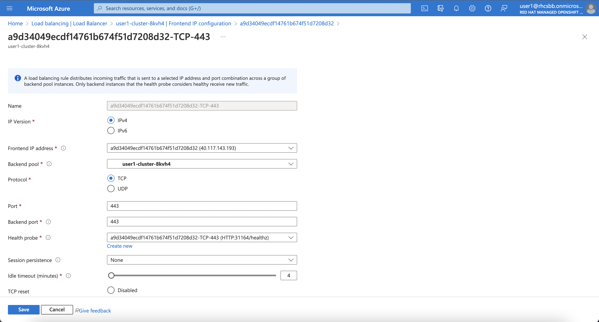